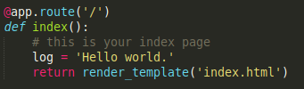

Rest and software architecture
What is REST?
- REST = Representational State Transfer
- Defined in Roy Fielding’s thesis, chapter 5, available here: http://www.ics.uci.edu/~fielding/pubs/dissertation/rest_arch_style.htm
- This class is also based on: https://restfulapi.net/
- REST is a software architecture:
- A hybrid style, combining several architectural styles
What is RESTful API?

Software architectures
- “A software architecture is an abstraction (high-level) of the run-time elements of a software system during some phase of its operation. A system may be composed of many levels of abstraction and many phases of operation, each with its own software architecture.”
- Multiple phases: start-up, normal operation, etc
- Multiple levels, different levels of architectural details
- Focus is on run-time, separates the discussion of architecture from the static structure of program source code
- “A software architecture is defined by a configuration of architectural elements—components, connectors, and data—constrained in their relationships in order to achieve a desired set of architectural properties.”
- Components: Elements that process system data
- Connectors: Elements that connect pieces of the architecture
- Data: The information used and transformed in the system
Components
- “A component is an abstract unit of software instructions and internal state that provides a transformation of data via its interface.”
- Software instructions: what the component actually does (behavior)
- Internal state: impacts behavior, not seen from the outside
- abstract unit…via its interface: components accessed through an interface, not directly, we see interface and services but not internal states and implementation details (blackbox)
Connectors
- “A connector is an abstract mechanism that mediates communication, coordination, or cooperation among components.”
-
transfer
data elements between components
-
no visible changes
to the data — although they may do encoding/decoding steps internally, these are not seen outside the connectors
Data
- “A datum is an element of information that is transferred from a component, or received by a component, via a connector.” (such as xml and JSON)
- information transferred to, or received from, a component using a connector
- does not include internal state information
- not included in all architectural descriptions, but important for those where data plays a major role (e.g., online purchase system)
Configurations
- “A configuration is the structure of architectural relationships among components, connectors, and data during a period of system run-time.”
-
represents
collections of interacting components and connectors
-
constrains
how components interact
- allow distinguishing between a given “state” versus the universe of possibilities for component/connector structuring
-
represents
Design Patterns
- Design patterns, pattern languages are used to describe commonly recurring programming scenarios.
- Styles give a similar shorthand to describing possibly complex configurations and interactions
PLACE EXAMPLE 44 HERE
| Index | Prev | Next |